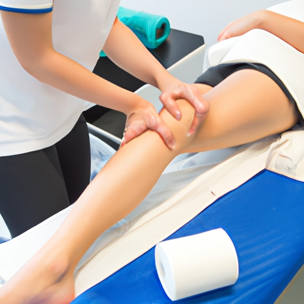
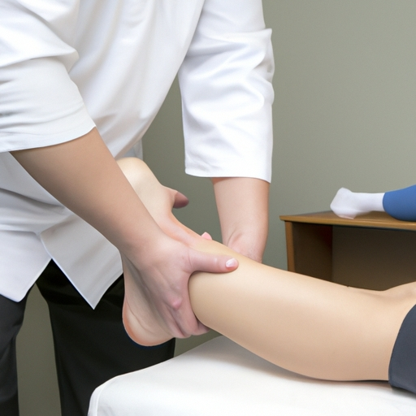
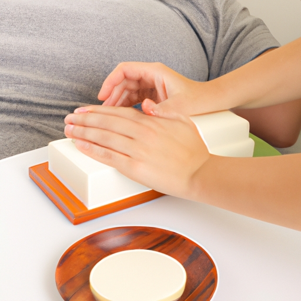
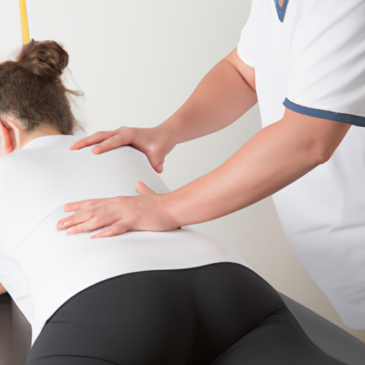

News
Physiotherapy Cork
Physiotherapy Cork
Physical Exercises
Manual Therapy
Hydrotherapy
Posture Correction
Rehabilitation Services
Rehabilitation Services
Occupational Therapy
Speech Therapy
Adaptive Equipment and Assistive Technology
Cognitive Behavioral Therapy
Lymphedema Management
Vestibular Rehabilitation
Splinting and Casting
Balance Retraining
Pain Education
Neuromuscular Reeducation
Pain Management
Pain Management
Medication Management
Transcutaneous Electrical Nerve Stimulation TENS
Injections
HeatIce Therapy
Soft Tissue Mobilization
Biofeedback
Trigger Point Release
Joint Mobilization
Stretching
Cognitive Behavioral Therapy
Physiotherapist Training
Physiotherapist Training
Anatomy and Physiology
Kinesiology
Clinical Reasoning
Evidence Based Practice
Manual Therapies
Exercise Prescription
Psychology
Pathophysiology
Sports Medicine
Neurology
About Us
Contact Us
News

Benefits of Physiotherapy for Rehabilitation in Cork
Physiotherapy is a great way to help with rehabilitation in Cork.. It has numerous (benefits that can help improve your overall health and well-being.
Posted by
on 2023-07-03

Common Conditions and Injuries Treated by Physiotherapists in Cork
Physiotherapists in Cork are skilled practitioners who treat a wide range of common conditions and injuries.. These include (but aren't limited to) strains, sprains, back pain, neck soreness and whiplash.
Posted by
on 2023-07-03
Discover the Power of Physiotherapy In Cork: How To Take Care of Your Body and Mind?
Physiotherapy in Cork has the power to help you take care of your body and mind!. With it's various treatments, such as massage, exercise programs, and hydrotherapy, you can reduce pain and improve physical ability. (It) can also help you manage stress and depression more effectively.
Posted by
on 2023-07-03

Get Moving Again: How to Get the Most Out of Physiotherapy In Cork
Physiotherapy in Cork can help you get moving again!. It is an important part of your recovery that can help you regain strength and mobility.
Posted by
on 2023-07-03

How to Choose a Physiotherapist in Cork and Feel Better Now!
Choosing the right physiotherapist in Cork can be a difficult task, but with some research and careful consideration it's possible to find someone who can help you feel better now! (You'll) want to start by looking up local physios and reading reviews - seeing what past patients have said may give you a better idea of the quality of care they provide.. Make sure to consider their qualifications and experience, too - look for someone with at least three years' practice in the field.
Once you've narrowed down your list of potentials, think about how comfortable you are with them: Do they have good communication skills?
Posted by
on 2023-07-03
How to Find the Best Physiotherapy in Cork: Uncovering the Secrets!
Physiotherapy can be life-saving for many people in Cork!. Finding the best one though, is not always easy.
Posted by
on 2023-07-03
How to Make Pain a Thing of the Past with Professional Physiotherapy in Cork
Pain is an unpleasant experience that can affect the physical, mental and emotional wellbeing of a person.. But with professional physiotherapy in Cork, it doesn't have to be!
Posted by
on 2023-07-03
Physiotherapy Exercises and Techniques to Improve Mobility in Cork
Physiotherapy is an important part of improving mobility for those with reduced physical ability, such as in Cork.. It helps to increase the range of motion and can be used to help reduce pain.
Posted by
on 2023-07-03
Tips for Finding a Qualified Physiotherapist in Cork
Finding a qualified physiotherapist in Cork can be daunting!. With so many practitioners offering their services, it's hard to know who is right for you.
Posted by
on 2023-07-03
Types of Physiotherapy Services Available in Cork
Physiotherapy is an increasingly popular form of healthcare that has many benefits.. It can help to reduce pain, improve mobility and restore movement, as well as strengthen muscles and prevent further injury.
Posted by
on 2023-07-03
What are the Benefits of Physiotherapy Cork for Mobility and Flexibility?
Physiotherapy Cork is an invaluable asset when it comes to improving mobility and flexibility.. It offers numerous benefits that can help individuals of all ages and abilities.
Posted by
on 2023-07-03
What is Physiotherapy Cork and How Can It Help?
Physiotherapy Cork is a type of physical therapy that seeks to aid and improve the functionality of musculoskeletal systems.. It can help rehabilitate people who have been injuried, often from sports, as well as those with disabilities or chronic conditions.
Posted by
on 2023-07-03
What is the Latest in Physiotherapy Treatment from Cork?
Physiotherapy treatment in Cork has come a long way!. From manual therapy and exercise prescription to advanced technology-based solutions, there is no shortage of options for those seeking relief from pain or mobility problems.
Posted by
on 2023-07-03
What is the Most Effective Way to Manage Pain with Physiotherapy Cork?
Physiotherapy Cork is an effective way to manage pain!. It can help alleviate discomfort and increase mobility, as well as preventing future problems.
Posted by
on 2023-07-03
What is the Secret to Recovering from Injury with Physiotherapy Cork?
Recovering from an injury with physiotherapy cork can be tough!. But, if you follow the right steps (and some tips and tricks!), you can make it much easier.
Posted by
on 2023-07-03
Old Posts
New Posts